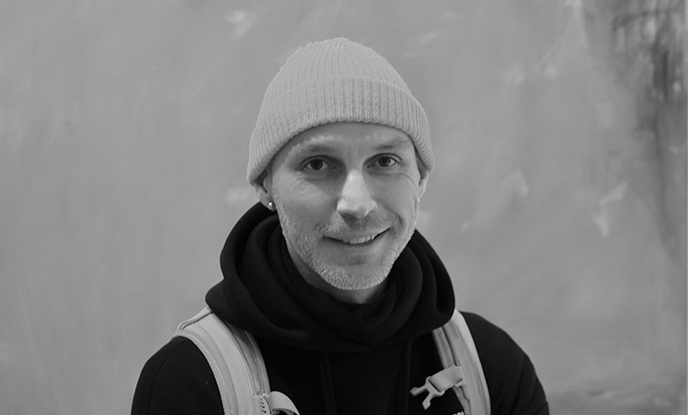

Сергій Канигін
Вчитель математики та інформатики
Навчаю мислити, а не запам’ятовувати. Формую логіку, що працює в житті, та цифрову грамотність, що відкриває майбутнє.
Я переконаний, що сучасний урок — це не лише передача знань, а створення середовища для розвитку мислення. Математика формує логіку, послідовність та здатність аналізувати, а інформатика навчає застосовувати ці вміння у цифровому світі.
У своїй роботі я поєдную класичну математичну строгість із сучасними технологіями. Використовую інтерактивні інструменти, візуалізацію, практичні задачі та проєктний підхід. Для мене важливо, щоб учні не просто знали формулу, а розуміли її сенс і могли застосовувати знання на практиці.
Я підтримую атмосферу партнерства на уроці: повага, діалог, можливість помилятися та шукати власний шлях до розв’язання. Адже саме через пошук і аналіз формується справжнє мислення.